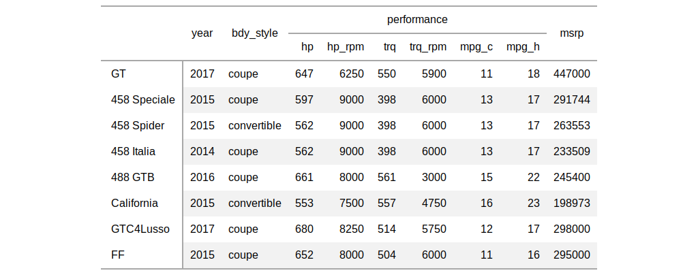

| tab_spanner {gt} | R Documentation |
Set a spanner column label by mapping it to columns already in the table. This label is placed above one or more column labels, spanning the width of those columns and column labels.
tab_spanner(data, label, columns)
data |
a table object that is created using the |
label |
the text to use for the spanner column label. |
columns |
the columns to be components of the spanner heading. |
an object of class gt_tbl.

Other table-part creation/modification functions: gt_preview,
gt, tab_footnote,
tab_header, tab_options,
tab_row_group,
tab_source_note,
tab_stubhead_label, tab_style
# Use `gtcars` to create a gt table;
# Group several columns related to car
# performance under a spanner column
# with the label `performance`
tab_1 <-
gtcars %>%
dplyr::select(
-mfr, -trim, bdy_style, drivetrain,
-drivetrain, -trsmn, -ctry_origin
) %>%
dplyr::slice(1:8) %>%
gt(rowname_col = "model") %>%
tab_spanner(
label = "performance",
columns = vars(
hp, hp_rpm, trq, trq_rpm,
mpg_c, mpg_h)
)